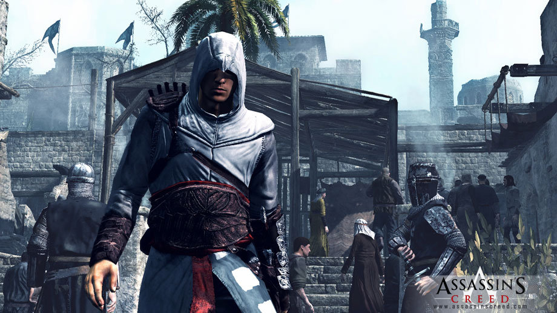
Protagonista
Altaïr Ibn-La'Ahad
Un hábil Asesino cuya arrogancia le obliga a afrontar las consecuencias de sus actos y recuperar su lugar en la Orden.
La primera memoria. La historia de Altaïr Ibn-La'Ahad nos lleva a Tierra Santa, en plena Tercera Cruzada, donde una guerra secreta decide el destino de la humanidad.
Antes de Ezio, Connor o Bayek, existió Altaïr. El primer Assassin's Creed presentó una aventura de sigilo, exploración y conspiraciones históricas que sentó las bases de toda la saga.
Este dossier reúne sus personajes, contexto histórico, ciudades, herramientas y secretos. La información de la historia se puede descubrir poco a poco para evitar destripes innecesarios.
Las figuras que dan forma a la primera gran historia de la Hermandad. Las descripciones iniciales evitan revelar giros importantes.

Un hábil Asesino cuya arrogancia le obliga a afrontar las consecuencias de sus actos y recuperar su lugar en la Orden.
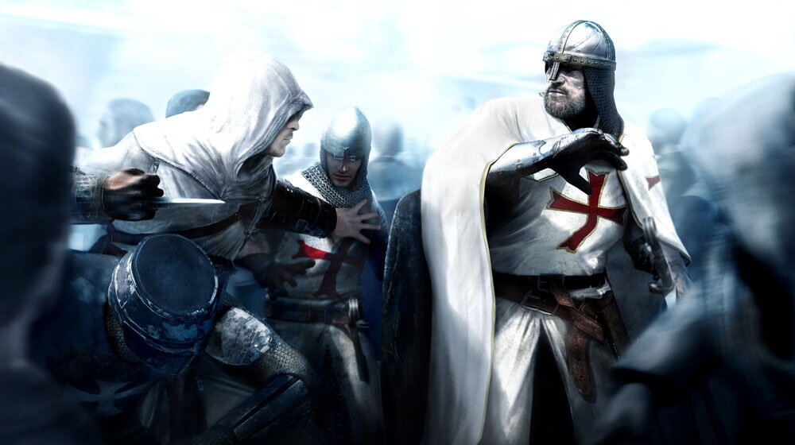
Líder de los Asesinos en Masyaf y mentor de Altaïr. Su autoridad guía el destino de la Hermandad.
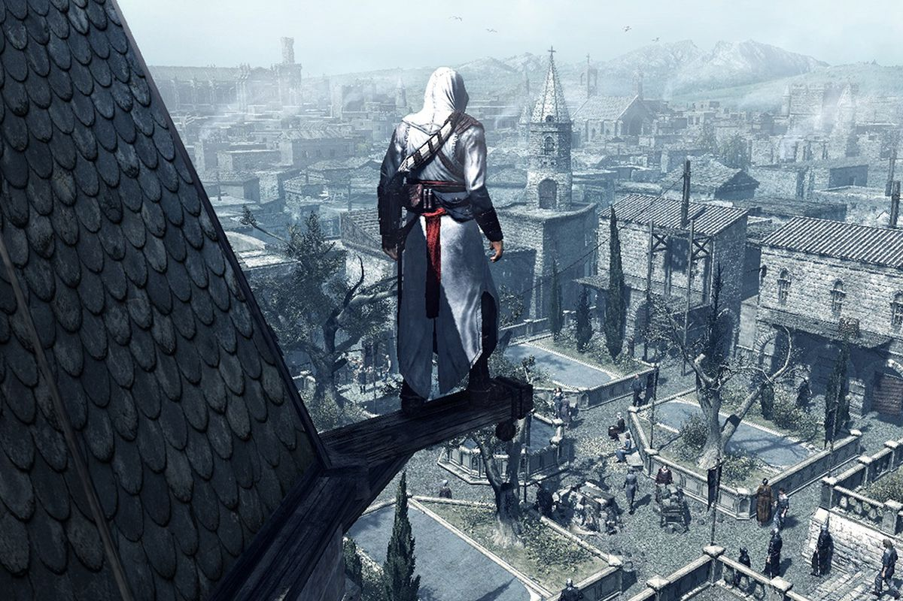
Un Asesino de Jerusalén cuya relación con Altaïr queda marcada por una misión que sale mal.
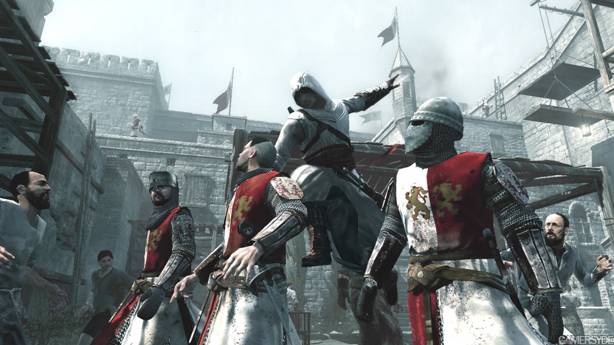
Un joven retenido por Abstergo que revive los recuerdos de un antepasado mediante el Animus.
Tierra Santa, 1191. La Tercera Cruzada enfrenta a ejércitos cristianos y musulmanes por el control de ciudades y territorios estratégicos.
En este escenario, la Orden de los Asesinos y los Caballeros Templarios persiguen objetivos opuestos. Sus conflictos se desarrollan lejos de la mirada de la mayoría de la población.
Altaïr recibe una serie de objetivos que le llevan a investigar conspiraciones, recorrer ciudades y cuestionar las órdenes que recibe.
Tres grandes ciudades, cada una con sus distritos, tejados, mercados y objetivos.
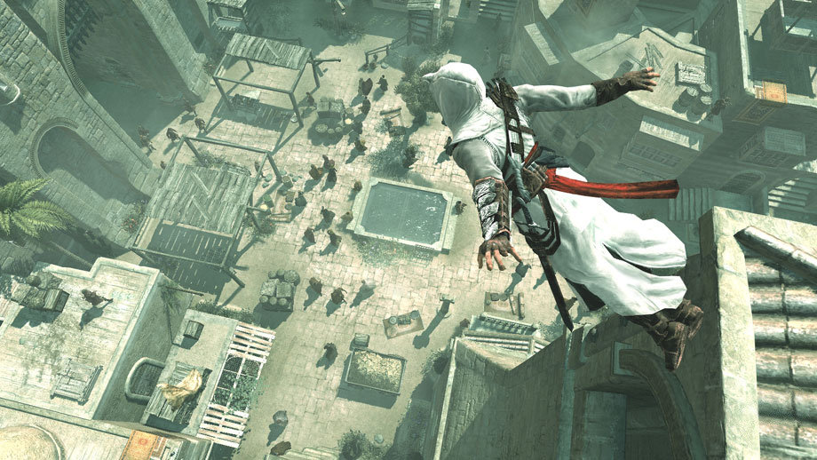
Una ciudad sagrada de contrastes, mercados y monumentos.
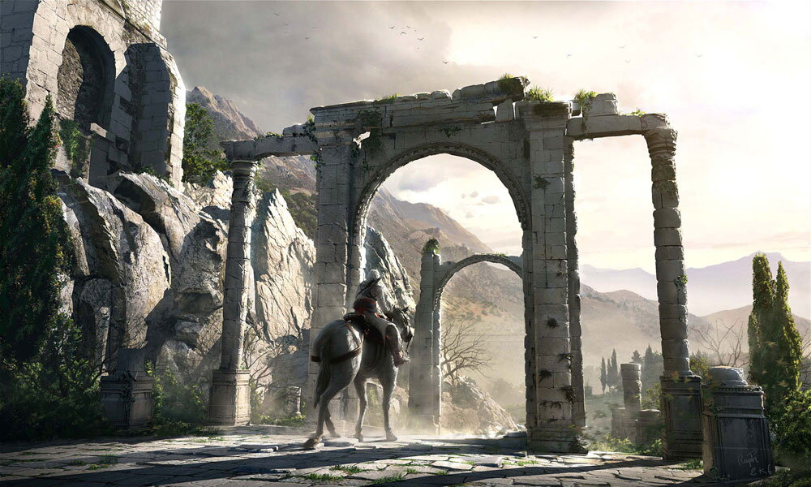
Puerto estratégico y escenario de la guerra cruzada.
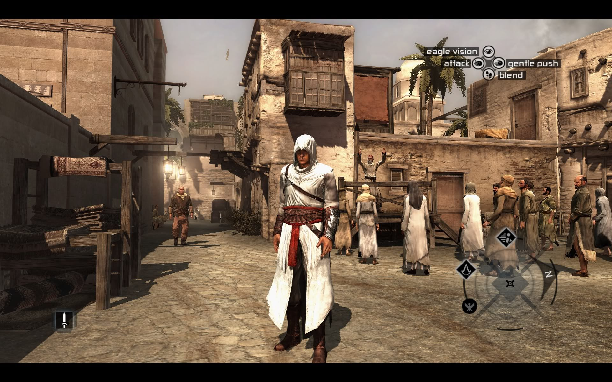
Una urbe de mercados, callejones y grandes edificios.
El arsenal de Altaïr combina discreción, movilidad y combate directo.
El arma emblemática de la Hermandad, diseñada para eliminar objetivos con precisión y discreción.
Herramientas para enfrentamientos abiertos cuando el sigilo deja de ser una opción.
Permiten neutralizar amenazas a distancia y mantener la ventaja desde los tejados.
Una habilidad especial que ayuda a distinguir objetivos y elementos importantes.
Escalar, saltar y desplazarse por fachadas y tejados para dominar el entorno.
Mezclarse con los ciudadanos, caminar con calma y evitar llamar la atención.
En Assassin's Creed no basta con localizar al objetivo. Altaïr debe conocer el terreno, descubrir sus rutinas y reunir información para encontrar el momento adecuado. Cada ciudad se convierte en un pequeño tablero de investigación.
1. Reconocer el distrito. Al llegar a una zona nueva, escalamos atalayas para sincronizar el mapa y revelar puntos de interés. Desde las alturas podemos orientarnos, localizar la Oficina de Asesinos y observar mejor el entorno.
2. Reunir información. Visitamos los lugares señalados y realizamos investigaciones. Podemos escuchar conversaciones, robar documentos, interrogar a personas o ayudar a informadores de la Hermandad.
3. Volver a la Oficina. Cuando hemos conseguido información suficiente, acudimos al jefe de la Oficina de Asesinos. Allí recibimos la pluma que servirá como prueba del asesinato.
4. Localizar al objetivo. Con las pistas reunidas, nos acercamos al objetivo, observamos su entorno y buscamos una oportunidad para ejecutar el asesinato.
5. Escapar. Después del asesinato debemos romper la línea de visión de los guardias, escondernos y recuperar la discreción.
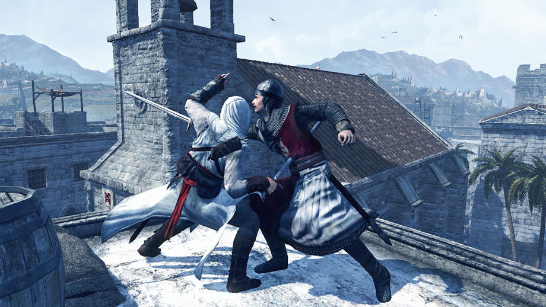
Estas son las actividades principales que aparecen durante la preparación de los asesinatos.
Nos sentamos en un banco, fijamos la atención en varias personas y escuchamos discretamente. Sus palabras pueden revelar reuniones, planes o puntos débiles del objetivo.
Seguimos a una persona que lleva información y esperamos el momento oportuno para sustraer una carta, un mapa u otro objeto sin levantar sospechas.
Seguimos a un individuo hasta encontrar la ocasión de enfrentarnos a él. Tras un combate cuerpo a cuerpo, obtenemos la información que oculta.
Los contactos de la Hermandad nos encargan pruebas a cambio de información: carreras por los tejados, escoltas o eliminar objetivos concretos.
Algunos informadores piden recoger banderas dentro de un límite de tiempo, eliminar arqueros o destruir puestos de comerciantes.
Podemos intervenir cuando los guardias acosan a habitantes de la ciudad. Al ayudarles, algunos ciudadanos o grupos pueden facilitarnos apoyo durante nuestras huidas.
El primer Assassin’s Creed esconde referencias visuales, pequeños detalles del Animus y pistas que anticipan el universo que la saga desarrollaría después.
Al abandonar Masyaf por primera vez y avanzar por el Reino, puedes localizar a Jamal. Con la Visión de Águila aparece marcado como una figura hostil. Es posible eliminarlo discretamente sin que los demás Asesinos reaccionen; si lo atacas abiertamente, los miembros cercanos acudirán contra Altaïr.
Jamal está implicado, junto con Masun, en la traición que permitió la entrada de las fuerzas de Roberto de Sable en Masyaf. Es un detalle fácil de pasar por alto durante las primeras horas.
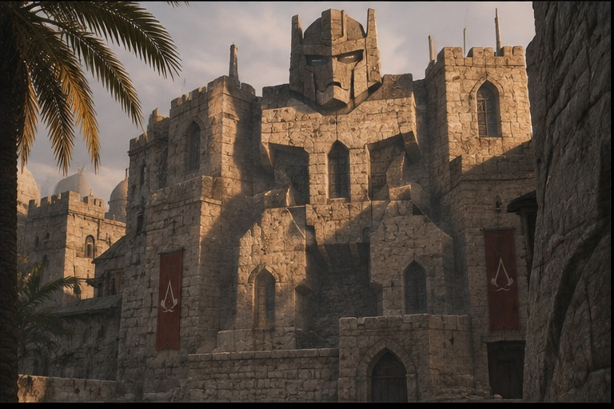
Una curiosidad de la comunidad señala que algunas ventanas y formas arquitectónicas de Jerusalén, Damasco y Acre pueden recordar al torso de Optimus Prime, el líder de los Autobots de Transformers.
Se trata de una interpretación visual de los jugadores, no de una aparición literal del personaje ni de una referencia confirmada oficialmente por Ubisoft.
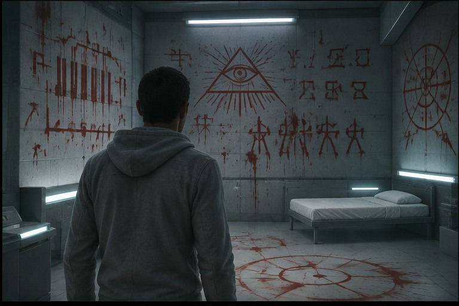
Al terminar la última memoria, Desmond descubre que el efecto de sangrado le permite percibir marcas que antes no veía. Son mensajes y símbolos escritos con sangre por Clay Kaczmarek, conocido como Sujeto 16, el anterior sujeto del Animus.
Entre ellos aparecen el Ojo de la Providencia, diagramas y advertencias relacionadas con los Fragmentos del Edén y los planes templarios. Estas pistas abren preguntas que tendrán continuidad en Assassin’s Creed II.
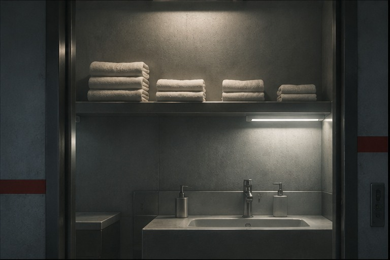
Entre bloques de memoria, merece la pena entrar en el baño de la habitación de Desmond. La disposición y el número de toallas cambian a medida que avanza la aventura.
Es un detalle ambiental pequeño, pero ayuda a transmitir que el tiempo pasa también fuera del Animus.
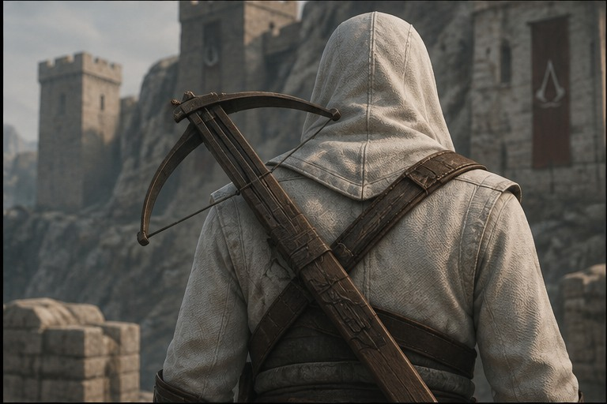
En la secuencia cinematográfica de introducción, Altaïr aparece con una ballesta a la espalda. Sin embargo, en la versión final de Assassin’s Creed (2007) no se puede utilizar como arma durante la aventura.
La ballesta acabaría formando parte del arsenal jugable de entregas posteriores, como Assassin’s Creed Brotherhood.
Tras uno de los asesinatos, Altaïr pronuncia una frase sobre las “pilas de Jubair”. La expresión se ha relacionado con la llamada batería de Bagdad, un objeto arqueológico cuya función continúa siendo objeto de debate.
Es una referencia curiosa que conecta un diálogo del juego con un artefacto real, aunque la interpretación como batería antigua no es un hecho histórico demostrado.
Además de los secretos narrativos, el juego incluye objetivos opcionales para quienes quieren explorar cada rincón de Tierra Santa.
Hay 420 banderas coleccionables repartidas por las distintas zonas del juego. Encontrarlas todas supone un reto de exploración y memoria del mapa.
El recuento habitual incluye nueve objetivos templarios principales ligados a la historia y 60 objetivos opcionales repartidos por el mundo.
Estos coleccionables y objetivos amplían la duración de la aventura, aunque no todos son necesarios para terminar la historia principal.
ARCHIVO AMPLIADO · Los detalles se presentan distinguiendo secretos jugables, referencias de la comunidad y curiosidades del desarrollo.
El primer juego estableció los pilares de la saga: memoria genética, conflicto entre Asesinos y Templarios, ciudades históricas abiertas, parkour, sigilo y una conspiración que conecta pasado y presente.
Su mayor legado fue crear un universo reconocible que Ubisoft seguiría desarrollando durante años.